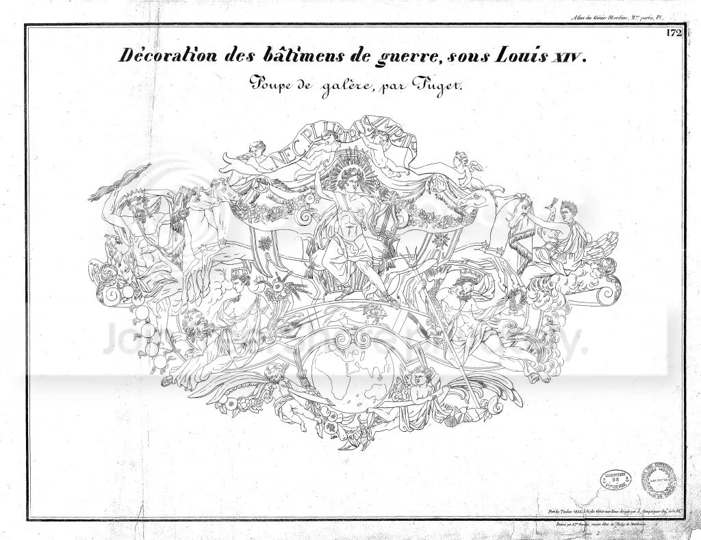

После завершения фундаментальных работ по строительству корпуса галеры оставались не менее трудоемкие и затратные по ресурсам операции по оснащению и отделке корабля. Так как ожидалось присутствие короля, эти работы были спланированы по высшему разряду. 
Эскиз кормовой скульптуры галеры (автор - Пьер Пюже)
На корабль вновь вернулись эскадры плотников, однако функции их были уже другими. В то время как основная часть рабочих помогала устанавливать рангоут и такелаж, эскадры 5 и 6 последовательно открывали порты дока, дав возможность воде постепенно заполнять бассейн, в котором находился стапель. Дело в том, что балласт в галеру нельзя было загружать, пока корабль не будет на плаву. Чтобы работы ни на минуту не прерывались, по бортам строящегося корабля были поставлены две галеры, на каждой из которых находились по полуэкипажу гребцов во главе с комитами галер Réale (старший) и Patronne.
Балласт состоял из ядер и кусков отслуживших свой срок пушек. 25 тонн балласта доставляли на борт галеры в корзинах по 50 кг в каждой.
Рядом с двумя галерами, обеспечивающими работы на строящемся корпусе, появились лихтеры, на которых доставили весла и предметы вооружения, а также наиболее громоздкие штуки рангоута: мачты и реи.
По завершении загрузки балласта гребцы галеры – шиурма – заняли свои места на новой галере. Таким образом, оснащение галеры, которое в обычных условиях продолжалось неделю, заняло в этом случае немногим более 5 часов.
К сожалению, в сохранившихся документах нет ни слова о том, как погружалась на галеру куршейная пушка, которая весила около 4 тонн. Видимо, от нее в данном случае отказались, чтобы не удлинять сроки строительства.
Несколько слов об убранстве галеры.
Обычно самое большое количество украшений имел флагманский корабль Галерного Корпуса – галера Réale. Она, конечно, несла королевский штандарт – большой флаг из белой камчатой ткани (или шелка) с разбросанными по нему золотыми лилиями и гербом короля в центре. Только Réale была окрашена в белый цвет; другие французские галеры были красными. Réale несла на корме три фонаря (другие галеры только два). Скульпторы, которые украшали транец и кормовую надстройку, естественно, обращали особое внимание на флагманский корабль флота. Наиболее известным из этих скульпторов был Пьер Пюже (Puget). Некоторые из его галерных работ можно и сейчас увидеть в Морском Музее в Париже.
Все кормовые помещения (капитанские каюты), инкрустировались «подобно Немецким кабинетам», как пишет в своем донесении Бродар. Снаружи кормовая часть покрывалась росписью и позолотой и украшалась скульптурой, отделывалась красным бархатом и золотой бахромой, вышивкой и золотой парчой; стоимость одних только тканей оценивалась в 109.000 ливров, «не считая мелких аксессуаров и отделки». Это была громадная сумма – многие квалифицированные рабочие зарабатывали в то время от 150 до 300 ливров в год, а ординарная галера могла быть построена примерно за 28.000 ливров. Но Réale была лицом флота; возможно, она заслуживала быть названной «чудом великолепия и изящества».
На галере, которая была построена 10 ноября 1678 года, естественно, убранство было скромнее. Однако по числу привлеченных мастеров высшей квалификации можно судить, что это была не просто ординарная стандартная галера.
Отчет интенданта марсельского порта Бродара о проведенных работах сохранился. ("Relation d'une galère bâtie à Marseille dans vingt-quatre heures en l'année 1678.") По нему можно восстановить почасовую хронологию работ. Интендант писал, что работы начались с самого раннего утра. К четырем пополудни все тимберсы и поясья обшивки корпуса находились на своем месте, начались отделочные работы и к делу приступили конопатчики. Весь корпус был проконопачен к десяти часам вечера, в течение ночи конопатчики проверяли качество своей работы, закачав воду в корпус, как это обычно делалось, для обнаружения непроконопаченных мест. Рано утром на следующий день на борту галеры была отслужена месса и проведены обычные церемонии благословения, пока бассейн, в котором была построена галера, заполнялся водой.
В 7 часов утра судно было выведено из бассейна в акваторию порта. Был установлен рангоут, доставлены на борт снасти и паруса, балласт, снаряжение, пушки и другое оружие. К 9.00 утра, согласно Бродару, экипаж был на своих местах, гребцы были приняты на борт и прикованы цепями, и галера, постройка которой началась в предыдущий день, уже находилась по другую сторону от цепи, преграждавшей вход в гавань. «Погода была прекраснейшая, - писал Бродар, - и испытания галеры прошли успешно как под парусами, так и на веслах.»
При постройке обычной галеры, конечно же, не было нужды в такой скорости. Для завершения строительства обычно требовалось несколько недель, а когда строились королевские галеры, то постройка их корпуса иногда занимала несколько лет. Но в годы, когда министрами были Кольбер и Сеньелэ, темпы строительства редко были неспешными.